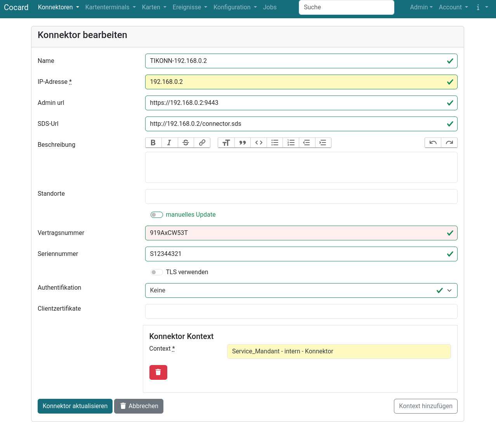
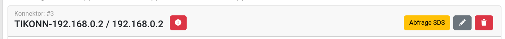
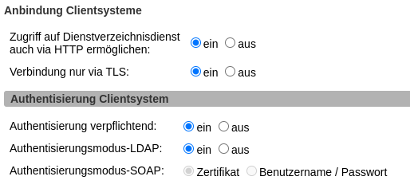
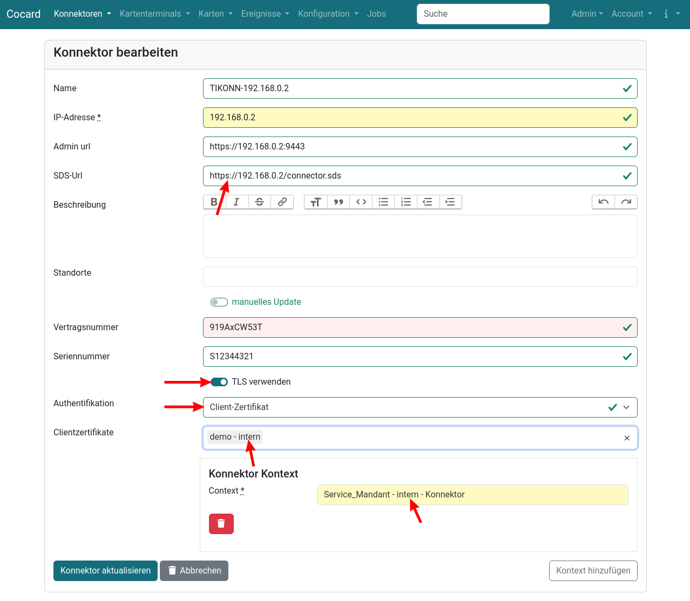

Konnektor anlegen/bearbeiten
Ohne TLS, ohne Authentifikation
Für die Anlage eines Konnektors in Cocard genügt zunächst die IP-Adresse, alle anderen Felder sind optional. Admin-URL und SDS-URL werden dabei automatisch generiert, man kann sie später manuell abändern, wenn der vorbelegte Wert nicht zutrifft.
Nach dem erstmaligen Speichern ruft man das Bearbeitungsformular ein zweites Mal auf und weist dem Konnektor einen oder mehrere Kontexte zu. Die Abfrage von Kartenterminals und Karten erfolgt mandantenweit, d.h. der Konnektor liefert alle Kartenterminals und alle Karten zurück, die im Infomodell dem Mandanten zugewiesen sind.
Idealerweise konfiguriert man alle Konnektoren so, dass man mit einem Default-Kontext alle Konnektordaten, Kartenterminals und Karten abfragen kann. In diesem Falle genügt ein einziger Kontext. Nur wenn es Kartenterminals oder Karten gibt, die man über diesen Kontext nicht abfragen kann, sind weitere Kontexte erforderlich.

| Feld | Beschreibung |
|---|---|
Name |
Kurzbezeichnung des Konnektors, wird in allen Übersichten angezeigt |
Admin-URL |
URL zum Aufruf der Web-Administration des Konnektors |
SDS-URL |
Abruf der SDS-Informationen vom Konnektor. Die Information ist kritisch für Cocard, ohne korrekte Daten ist Cocard nicht weiter nutzbar. Bei der Erstanlage und nach jeder Änderung sollte daher immer nach dem Speichern einmal die Abfrage SDS manuell ausgeführt werden. |
Beschreibung |
Freitextfeld für die Dokumentation |
Standorte |
Einem Konnektor können mehrere Standorte zugewiesen werden. Ob man Standorte für die Dokumentation, wo der Konnektor steht, oder zur Dokumentation für die Standorte, die der Konnektor bedient, bleibt dem Admin überlassen. |
Vertragsnummer |
Geschütztes Feld für die Vertragsnummer zu Dokumentationszwecken. |
Seriennummer |
Seriennummer des Konnektors zur Dokumentation |
TLS verwenden |
TLS aktivieren ja/nein |
Authentifikation |
|
Ein oder mehrere Client-Zertifikate für die Authentifikation am Konnektor |
|
Kontexte |
siehe Kontexte |
Nach dem Speichern mit einem zugewiesenen Kontext betätigt man einmal den Button Abfrage SDS. Damit erhält Cocard die Informationen über die einzelnen Services und Endpunkte, die für die Abfrage von Informationen per SOAP über die von der Gematik definierten Funktionen erforderlich sind. Cocard aktualisiert diese Information einmal pro Tag danach automatisch.

Mit der Information aus dem Service Directory Service (SDS) kann Cocard Kartenterminals und Karten abfragen. Die Abfrage erfolgt dabei mehrmals pro Stunde (bis auf das SDS selbst). Details zu den Zeitinterfallen sind in Jobverwaltung beschrieben.
Mit TLS, mit Authentifikation per Client-Zertifikat
Für eine sichere Kommunikation zwischen Client (Primärsystem, z.B. Cocard) und dem Konnektor aktiviert man TLS und die Authentifikation per Client-Zertifikat. Die nachstehende Abbildung zeigt die Einstellungen für die Kocobox v5.1.8. Für manche Szenarien wie die Komfortsignatur ist die sichere Kommunikation zwingend erforderlich.

| Cocard kann sich derzeit nur über Client-Zertifikate authentifizieren, eine Authentifikation via User/Passwort ist nicht möglich und ist zur Zeit auch nicht geplant. |
Für die sichere Kommunikation sind folgende Einstellungen am Konnektor erforderlich:
-
SDS-URL mit https eintragen
-
Schalter TLS verwenden aktivieren
-
Authentifikation: Client-Zertifikat auswählen
-
Client-Zertifikat hinterlegen, passen zum Kontext.
Nach dem Speichern holt man manuell einmal die SDS-Informationen mit dem Button Abfrage SDS.

Welche Client-Zertifikate müssen hinterlegt werden?
Der Konnektor benötigt ein Client-Zertifikat für jedes Clientsystem, das von Cocard bei diesem Konnektor benutzt wird. Das sind einmal die Clientsysteme, die der Konnektor selbst in seinem zugewiesenen Kontexten verwendet, hier im Beispiel intern. Wenn jetzt für die PIN-Prüfung/PIN-Verifizierung bei einer Karte weitere Kontexte mit anderen Clientsystemen zum Einsatz kommen, müssen diese Zertifikate hier zusätzlich hinterlegt werden.
Beispiel:
-
Der Konnektor benutzt den administrativen Kontext
Service_Mandant - intern - Konnektor, weil er damit alles erreichen kann, auch wenn der Kontext von Primärsystemen so nicht genutzt wird. -
Eine SMC-B-Karte benutzt den produktiven Kontext
Ein1 - iMedOne - Konnektorfür das PrimärsystemiMedOne.
Im Konnektor hinterlegt man nun das Client-Zertifikat für das Clientsystem intern und das Client-Zertifikat für das Clientsystem iMedOne.
Am Konnektor selbst muss der Kontext Ein1 - iMedOne - Konnektor nicht eingetragen werden, wenn hier keine zusätzlichen Kartenterminals oder Karten sichtbar werden, d.h. wenn alles schon über den Service_Mandant - intern - Konnektor erreichbar ist.